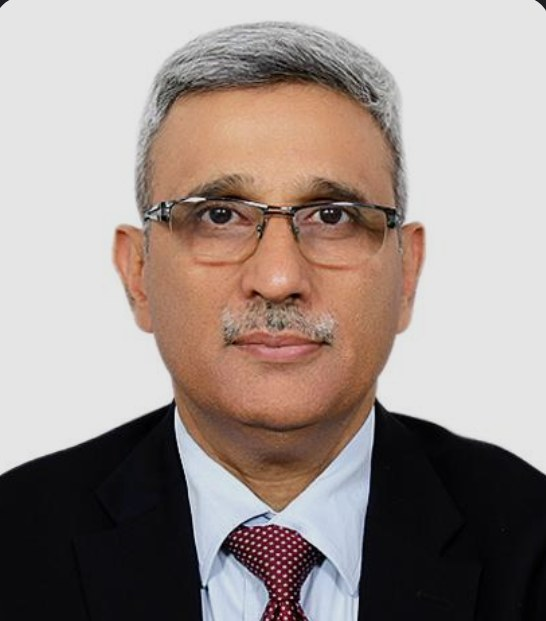
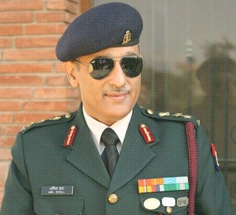
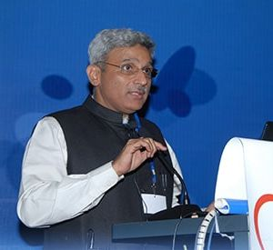
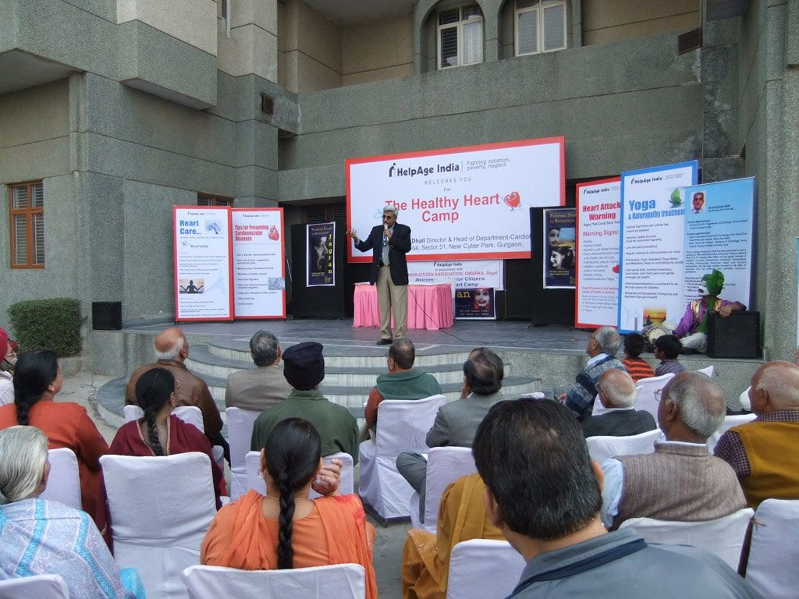

Home / About
Soldier, teacher, cardiologist
Forty years of medicine — from Army hospitals and a UN mission to leading cardiology departments across Delhi NCR, and now his own clinic in Gurugram.
Dr (Col) Anil Dhall is an interventional cardiologist with a special interest in complex coronary interventions, carotid and peripheral interventions, aortic stent-grafts, cardiac resynchronisation therapy and preventive cardiology.
An alumnus of the Armed Forces Medical College, Pune, he took his MD from Bombay University — standing first, with a gold medal — and trained in cardiology at GB Pant Hospital, Delhi. He served for twenty-five years in the Indian Armed Forces, including a deputation with the United Nations in Cambodia, before taking voluntary retirement as Senior Adviser and Professor of Medicine and Cardiology at the Army Hospital (Research & Referral), Delhi Cantonment. There he set up the interventional cardiology programme and the hospital's first cardiac catheterisation laboratory.
In 2005 the President of India awarded him the Sena Medal for distinguished service to the Armed Forces.
Since 2007 he has led cardiology departments at Max Devki Devi Heart & Vascular Institute, Artemis Health Institute, Delhi Heart & Lung Institute, Sarvodaya Hospital, Venkateshwar Hospital and Janakpuri Super Speciality Hospital — introducing quality indicators, 24×7 heart attack programmes, outreach clinics and training for doctors, nurses and paramedics. In 2024 he started The Heart Clinic in Gurugram, to offer the kind of personal, continuous care he values most.
He has taught, proctored and demonstrated techniques at meetings across the world, has been a postdoctoral teacher and examiner in cardiology, and has guided research for the ICMR and the Armed Forces Medical Research Council.

Sena Medal, 2005
Presidential award for distinguished service to the Armed Forces. Also: Chief of Army Staff Commendation (2006) and two GOC-in-C Commendations (1985, 2000).
Career
A career that moved between the Army, teaching hospitals and private cardiac centres — always with patients at the centre.


- 1982
MBBS, Armed Forces Medical College, Pune
Commissioned into the Army Medical Corps. Stood first in the Medical Officers' Junior Course (DGAFMS silver medal) and won the Col C R Rangarajan trophy for best all-round officer.
- 1990
MD (Medicine), INHS Asvini, Mumbai
Gold medal for standing first in MD Medicine, University of Bombay.
- 1990–1996
Medical specialist, Armed Forces hospitals
Graded and classified specialist in medicine, teaching MD students. Served with the United Nations Transitional Authority in Cambodia, helping set up three hospitals.
- 1996–1998
DM (Cardiology), GB Pant Hospital, Delhi
Young Scientist Award of the Cardiological Society of India, 1997.
- 1998–2007
Army Hospital (R&R), Delhi Cantt, and AFMC, Pune
Classified specialist and Associate Professor of Cardiology (Army Hospital R&R 1998–2000 and 2001–2006; Command Hospital and AFMC, Pune 2000–2001), then Senior Adviser and Professor of Medicine and Cardiology (2006–2007). Started the hospital's first cardiac catheterisation laboratory. Sena Medal, 2005.
- 2007–2009
Max Devki Devi Heart & Vascular Institute, Saket
Senior Consultant and Unit Head — strengthened coronary, peripheral, pacing, aortic and heart failure programmes.
- 2009–2011
Artemis Health Institute, Gurugram
Director and Head of Cardiology — built a 24×7 heart attack (primary angioplasty) programme and an acute stroke intervention service.
- 2011–2014
Delhi Heart & Lung Institute, New Delhi
Director of Cardiology — led the endovascular, carotid, CRT, congenital, CTO and complex PCI programmes.
- 2014–2019
Sarvodaya Hospital, Faridabad, and Venkateshwar Hospital, Dwarka
Director of Cardiovascular Sciences.
- 2019–2024
Janakpuri Super Speciality Hospital, New Delhi
Professor and Head of Cardiology.
- 2024 onwards
The Heart Clinic, Gurugram
Consultant cardiologist in his own practice.
Qualifications and memberships
Qualifications
- MBBSArmed Forces Medical College, Pune · 1982
- MD (Medicine)INHS Asvini, University of Bombay · 1990 · gold medal
- DM (Cardiology)GB Pant Hospital, University of Delhi · 1998
- RegistrationsDelhi Medical Council 3610 · Haryana Medical Council 4705 · MCI 3780
Fellowships
- FACCAmerican College of Cardiology
- FESCEuropean Society of Cardiology
- FAHAAmerican Heart Association
- FRCP (Edin)Royal College of Physicians of Edinburgh
- FSCAISociety for Cardiovascular Angiography & Interventions
- FHRSHeart Rhythm Society
- FCSICardiological Society of India
Memberships
- Association of Physicians of India
- Indian Academy of Echocardiography
- Endovascular Intervention Society of India · Vascular Society of India
- Indian Heart Rhythm Society · Paediatric Cardiac Society of India
- European Association of Percutaneous Cardiovascular Interventions
- European Heart Rhythm Association · Acute Cardiovascular Care Association
Teaching and academic work
- Professor of Medicine and CardiologyUniversity of Delhi; earlier Associate Professor at AFMC Pune (University of Pune and Maharashtra University of Health Sciences)
- Teacher and examinerNational Board of Examinations — DNB Cardiology and Interventional Cardiology; MBBS and MD examiner
- Course directorBasics & Beyond coronary intervention course (Army Hospital R&R and AIIMS, 2005); first national course on cardiac pacing and clinical electrophysiology (2008)
- ProctorComplex PCI, rotational atherectomy with IVUS, carotid intervention and CRT programmes
- Editorial boards and reviewerIndian Heart Journal, International Journal of Cardiology, Catheterization & Cardiovascular Interventions, JAPI, Medical Journal Armed Forces India
- Trials and advisory rolesSteering committees of the TUXEDO trial and the PROMUS Element and OPTIMIND registries; advisory roles with ICMR, DRDO (INMAS), the National Board of Examinations and the Drug Controller General of India
Faculty at meetings worldwide
TCT (USA) and TCT Asia Pacific, EuroPCR, ESC Congress, ACC (USA), VIVA, CardioStim Europe, World Congress of Cardiac Pacing & Electrophysiology, Singapore Live and India Live (including live case transmissions), CIT China, CCT Japan, European Bifurcation Club, Cardiological Society of India, APICON and many more.
Awards for cases and research
- Dr K L Chopra Award, Cardiological Society of India (1997)
- Best Case, TCT Asia Pacific (2004) — closure of a giant coronary fistula with a vascular plug
- Challenging Cases awards, TCT (2006, 2008)
- Chikitsa Ratan Award, Delhi Medical Association (2010)
Selected publications
More than 40 research papers and 11 chapters in textbooks, including the API Textbook of Medicine. A selection:
- Dhall A, Malani SK, Chadha DS. Thrombosuction for procedural acute thrombosis during high-risk carotid angioplasty — a case report. J Invasive Cardiol. 2010;22(8):E144–6. PubMed
- Gupta SK, Kotwal J, Kotwal A, Dhall A, Garg S. Role of homocysteine & MTHFR C677T gene polymorphism as risk factors for coronary artery disease in young Indians. Indian J Med Res. 2012;135:506–12. PubMed
- Chadha DS, Karthikeyan G, Goel K, et al., Dhall A. N-terminal pro-BNP plasma levels before and after percutaneous transvenous mitral commissurotomy for mitral stenosis. Int J Cardiol. 2009. PubMed
- Kalra GS, Dhall A, Verma PK, Arora R. Transcatheter device closure of ventricular septal defects: immediate results and intermediate-term follow-up. Am Heart J. 1999;138:139–44. PubMed
- Kalra GS, Verma PK, Dhall A, et al. Transcatheter closure of secundum atrial septal defect with the ASDOS device: initial experience. Indian Heart J. 1998;50(4):409–13. PubMed
- Dhall A, Bedi VS, Swain P, et al. Current status of EVAR in abdominal aortic aneurysm (review). Cardiology Today. 2006;10(6):347–51.
- Nair M, Kamal A, Dhall A, et al. Radiofrequency ablation of an unusual variant of atrial flutter. Indian Heart J. 1997;49:195–7.

Heart camps and public education
Dr Dhall has organised nearly 200 free heart camps in India and abroad — from Delhi, Uttar Pradesh, Uttarakhand, Bihar, Rajasthan, Assam and Himachal to Iraq and Nigeria — with more than 10,000 ECGs, 1,000 echocardiograms and 500 ankle-brachial tests in places without cardiac care. He speaks regularly on TV, radio and at community groups about blood pressure, heart attacks and diet.
Questions about your heart? Start with a conversation.
Book a clinic visit in Gurugram or a video consultation from anywhere. Bring your reports — Dr Dhall will go through them with you, in English or Hindi.